Ejercicios interactivos de números reales II
Señala en cada caso el número real al que corresponde la representación gráfica dada. Observa el punto gris.
1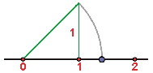
Tomamos un cuadrado de lado 1. Entonces, usando el teorema de Pitágoras sabemos que su diagonal mide 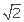
En efecto, pues 12 + 12 = d2, de donde, d =
Basta coger esta medida y transportarla con el compás (tomando centro en 0 y con radio la diagonal de nuestro cuadrado). De este modo, representamos en la recta real el número .
2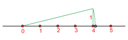
Tomamos un rectángulo de base 4 y lado 1. Entonces, usando el teorema de Pitágoras sabemos que su diagonal mide 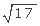
En efecto, pues 42 + 12 = d2, de donde, 17 = d2 y, por tanto, d =
Basta coger esta medida y transportarla con el compás (tomando centro en 0 y con radio la diagonal de nuestro cuadrado). De este modo, representamos en la recta real el número .
3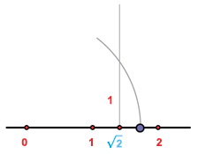
Tomamos un rectángulo de base y de altura 1. Entonces, usando el teorema de Pitágoras sabemos que su diagonal mide 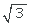
En efecto,
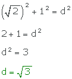
Basta coger esta medida y transportarla con el compás (tomando centro en 0 y con radio la diagonal de nuestro cuadrado). De este modo, representamos en la recta real el número .
4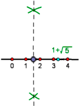
En primer lugar representamos el número 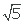
Para ello tomamos un rectángulo de base 2 y altura 1. Entonces, usando el teorema de Pitágoras sabemos que su diagonal mide
En efecto, pues 22 + 12 = d2, de donde, 5 = d2 y, por tanto, d=
Basta coger esta medida y transportarla con el compás (tomando centro en 0 y con radio la diagonal de nuestro cuadrado). De este modo, representamos en la recta real el número .
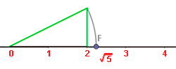
Ahora representamos el número  , para lo que basta sumar una unidad . Esto se hace transportando con el compás cualquier unidad, por ejemplo, la tomada pinchando en 0 y abriendo hasta 1.
, para lo que basta sumar una unidad . Esto se hace transportando con el compás cualquier unidad, por ejemplo, la tomada pinchando en 0 y abriendo hasta 1.
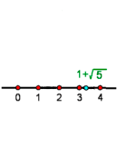
Por último, debemos encontrar la mitad del valor obtenido anteriormente. Para ello trazamos la mediatriz del segmento determinado por 0 y por 
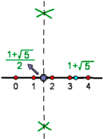
Si tienes dudas puedes consultar la teoría